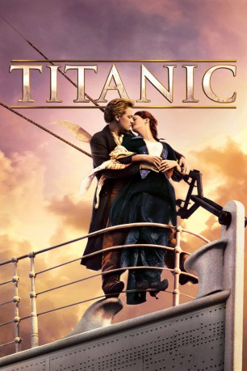

 
 IMDB-Wertung: 7.8 / 10
IMDB-Wertung: 7.8 / 10  Metascore:
Metascore: 
Atlantischer Ozean, 1912: Auf der Jungfernfahrt der Titanic trifft der mittellose Maler Jack Dawson auf die schöne, aber unglückliche Erste-Klasse-Passagierin Rose DeWitt Bukater. Rose reist gemeinsam mit ihrer Mutter und ihrem versnobten Verlobten Cal, den sie aus finanziellen Gründen heiraten soll, aber nicht liebt. Als Jack beobachtet, wie Rose über die Reling klettert, um sich ins Meer zu stürzen, und ihren sicheren Tod abwenden kann, beginnt für beide eine Liebesgeschichte über Klassengrenzen hinweg. Gemeinsam mit Jack entdeckt Rose das ausgelassene Leben der einfachen Passagiere unter Deck der Titanic und das wahre Wesen der Liebe. Währenddessen steuert die als unsinkbar geltende Titanic geradewegs auf einen Eisberg zu.
Jahr: 1997
Dauer: 194 Minuten
FSK: 12
Land: USA Studio: Paramount PicturesTonspuren:
Untertitel:
Auflösung: 1080p (1920×1080) Größe: 14336 MB
Regisseur:  James Cameron
James Cameron
Drehbuch: James Cameron
Soundtrack: James Horner
Darsteller:
 Leonardo DiCaprio als Jack Dawson
Leonardo DiCaprio als Jack Dawson Kate Winslet als Rose Dewitt Bukater
Kate Winslet als Rose Dewitt Bukater Billy Zane als Cal Hockley
Billy Zane als Cal Hockley Kathy Bates als Molly Brown
Kathy Bates als Molly Brown Frances Fisher als Ruth Dewitt Bukater
Frances Fisher als Ruth Dewitt Bukater Bill Paxton als Brock Lovett
Bill Paxton als Brock Lovett Bernard Hill als Captain Smith
Bernard Hill als Captain Smith David Warner als Spicer Lovejoy
David Warner als Spicer Lovejoy Victor Garber als Thomas Andrews
Victor Garber als Thomas Andrews Jonathan Hyde als Bruce Ismay
Jonathan Hyde als Bruce Ismay Danny Nucci als Fabrizio
Danny Nucci als Fabrizio Ewan Stewart als 1st Officer Murdoch
Ewan Stewart als 1st Officer Murdoch Ioan Gruffudd als Fifth Officer Lowe
Ioan Gruffudd als Fifth Officer Lowe Jonny Phillips als 2nd Officer Lightoller
Jonny Phillips als 2nd Officer Lightoller Mark Lindsay Chapman als Chief Officer Wilde
Mark Lindsay Chapman als Chief Officer Wilde Richard Graham als Quartermaster Rowe
Richard Graham als Quartermaster Rowe Ron Donachie als Master at Arms
Ron Donachie als Master at Arms Eric Braeden als John Jacob Astor
Eric Braeden als John Jacob Astor Bernard Fox als Col. Archibald Gracie
Bernard Fox als Col. Archibald Gracie Michael Ensign als Benjamin Guggenheim
Michael Ensign als Benjamin Guggenheim Jenette Goldstein als Irish Mommy
Jenette Goldstein als Irish Mommy Linda Kerns als 3rd Class Woman
Linda Kerns als 3rd Class Woman Martin Jarvis als Sir Duff Gordon
Martin Jarvis als Sir Duff Gordon James Lancaster als Father Byles
James Lancaster als Father Byles Elsa Raven als Ida Straus
Elsa Raven als Ida Straus Derek Lea als Leading Stoker Barrett
Derek Lea als Leading Stoker Barrett Seth Adkins als Slovakian 3 Year Old Boy
Seth Adkins als Slovakian 3 Year Old Boy Barry Dennen als Praying Man
Barry Dennen als Praying ManDatei: X:\1997\Titanic (1997, FSK12, 1920x1080) 3D.mkv seit 02.02.2015
Festplatte: HD 1996-2002
 Es gibt insgesamt 83 Filme in der Gruppe '1997'
Es gibt insgesamt 83 Filme in der Gruppe '1997'